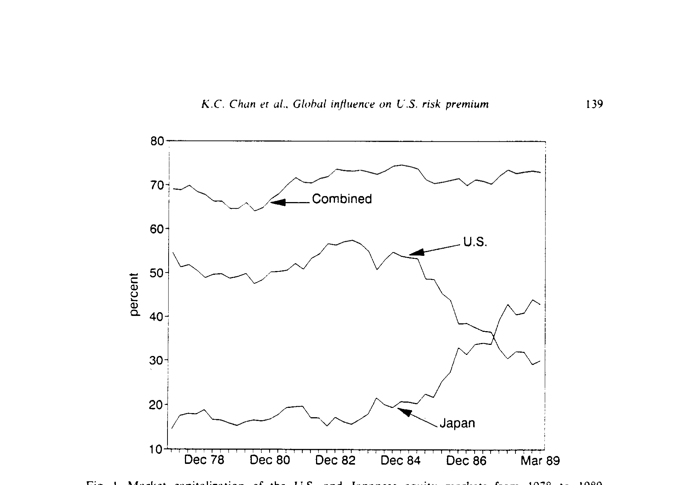
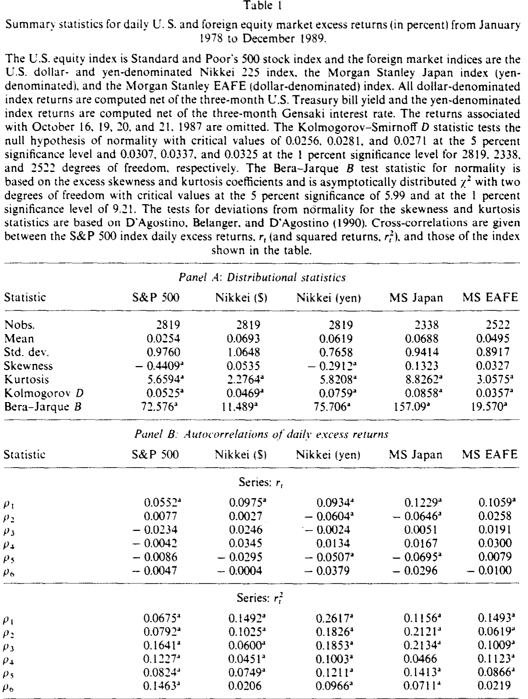
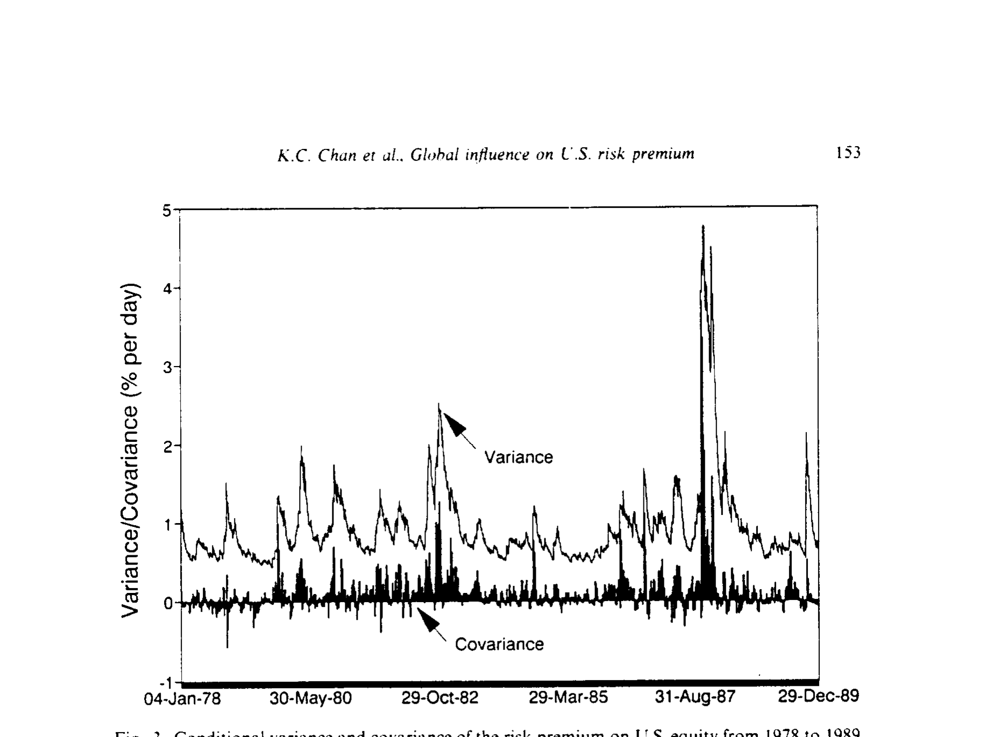
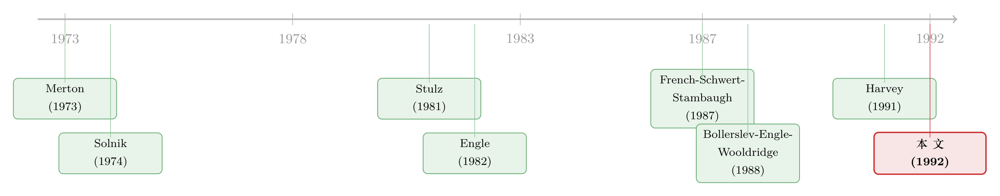

美国股市的风险溢价，原来一半要看东京的脸色
本文读的是 Chan, Karolyi & Stulz (1992, Journal of Financial Economics)：用一个双变量 GARCH-in-mean 模型，他们发现 美国股票（S&P 500）的条件预期超额收益，显著地由它与日本日经指数的「条件协方差」决定，而不由它自身的条件方差决定——这意味着，到了 1980 年代，定价美国股市风险的，已经不再只是美国自己。
1 一个被默认了几十年的前提
先问一个看似天真的问题：是什么决定了美国股票的风险溢价？
教科书给的答案干净利落。资本资产定价模型 (capital asset pricing model, CAPM) 说，市场组合的风险由它收益的方差来度量，于是风险溢价随方差上升而上升。哪怕你不信 CAPM，只要投资者厌恶风险，给市场组合的收益分布加一个「保均值的展宽」(mean-preserving spread)，风险溢价也该上去——所以「风险溢价与市场方差正相关」几乎是一条无需 CAPM 也成立的直觉。
沿着这条直觉，French, Schwert, and Stambaugh (1987) 做出了那篇经典：他们用 1928–1984 年的日度数据，把 S&P 500 当作市场组合，发现市场组合的条件预期超额收益，与它收益的条件方差正相关。一切都顺理成章。
但这里藏着一个被默默接受的前提：S&P 500 ≈ 世界市场组合。只有当美国资本市场与外部隔绝 (segmented)、或者美国资产本身就占了全球可交易财富的绝大部分时，美国的风险溢价才该「只由美国决定」。在 1970 年代中期以前，这两个条件大体都成立。
接着，一个自然的问题是：这个前提，到 1980 年代还站得住吗？
2 两件事，动摇了那个前提
作者把矛头对准了两个同时发生的变化。
第一，市场一体化 (market integration) 在 1980 年代显著加深。Cho, Eun, and Senbet (1986)、Wheatley (1988)、Gultekin, Gultekin, and Penati (1989)、Harvey (1991)、Campbell and Hamao (1992) 等一连串研究，用各种资产定价模型和月度数据，给出了股票市场已相当一体化的证据。
第二——也是这篇论文最直观的一击——美国股票在世界市场组合里的占比，正在缩水。如图 I 所示，从 1978 到 1989 年，美国股票市值占全球的比重一路下滑，而日本市值的占比则节节攀升，到 1980 年代末两者已不相上下。

Figure I: Market capitalization of the U.S. and Japanese equity markets from 1978 to 1989
这张图本身就是论点：如果 S&P 500 在世界组合里已经只占一半上下，那么把它当成世界市场组合的代理，在过去十年里就很可能是失真的。
于是逻辑链条接上了。若市场已经一体化，按 CAPM，美国市场组合的风险溢价就该取决于它的收益与世界市场组合收益的协方差。而这个协方差，恰恰是「美国市场组合自身方差」与「美国市场组合和非美组合之间协方差」的一个加权平均，权重就是美、非美股票各自在世界组合里的比重。哪怕 CAPM 不成立，在 Merton (1973) 的跨期 CAPM 里，组合的风险溢价同样随它与市场组合的协方差上升——结论的方向是一致的。
3 模型：把「世界组合」拆进一个方程
这是一篇有理论骨架的论文，值得把它的推导一步步拆开。
作者的假设很克制：(A.1) 市场国际一体化；(A.2) 投资者以美元为共同计价单位、做逐期的均值-方差优化；(A.3) 总体相对风险厌恶 \(\lambda\) 为常数。(A.2) 保证了 CAPM 成立，(A.3) 则保证风险溢价只在市场组合波动率变化时才变。
由这些假设，世界市场组合自身满足
$$ E(R_{m,t+1} - R_{0,t+1} \mid \Omega_t) = \lambda\, \mathrm{Var}(R_{m,t+1} - R_{0,t+1} \mid \Omega_t), $$
其中 \(\Omega_t\) 是 \(t\) 时刻的信息集，\(R_{m,t+1}\) 是世界组合收益，\(R_{0,t+1}\) 是无风险利率。这就是 French-Schwert-Stambaugh 那条关系的「世界版」。
再用 CAPM，对美国国内组合有
$$ E(r_{d,t+1} \mid \Omega_t) = \lambda\, \mathrm{cov}(r_{d,t+1}, r_{m,t+1} \mid \Omega_t), $$
小写 \(r\) 表示超额收益。但真正关键的一步在于：世界组合可以写成美国组合与外国组合的加权和，
$$ r_{m,t+1} = w_{dt}\, r_{d,t+1} + (1 - w_{dt})\, r_{f,t+1}, $$
\(w_{dt}\) 就是美国市值占世界财富的比重。把它代回上一式，协方差被拆成了两块——于是这篇论文真正盯住的方程出现了：
这个方程的妙处全在它的「退化情形」：若美国市场组合就等于世界市场组合，则 \(w_{dt}=1\)，第二项消失，整个式子塌缩回 French-Schwert-Stambaugh 检验的那条关系。换句话说，FSS 是本文的一个特例。而当 \(w_{dt}<1\) 时，外国市场的那一项 \((1-w_{dt})\,\mathrm{cov}(r_d, r_f)\) 就被「请」了进来。论文要回答的，就是这一项到底重不重要。
注意：哪怕美、非美收益毫不相关，本文与 FSS 也已经不同——因为美国自身方差前面多了一个权重 \(w_{dt}<1\)。一体化先在「权重」上动了 FSS 的根基，再在「协方差」上加了一项新东西。
那么 \(\lambda\)、方差和协方差怎么估？作者用 ARCH/GARCH 来刻画条件二阶矩。条件协方差矩阵 \(H_{t+1}\) 服从 Baba, Engle, Kraft, and Kroner (BEKK) 的形式：
$$ \varepsilon_{t+1} \mid \Omega_t \sim N(0, H_{t+1}), \qquad H_{t+1} = P'P + F'H_t F + G'\varepsilon_t \varepsilon_t' G, $$
\(P\) 是上三角矩阵，\(F\)、\(G\) 是自由矩阵。BEKK 的好处有二：一是它允许两个市场的条件方差、协方差互相影响（这正是 Hamao, Masulis, and Ng (1990) 强调的跨市场效应，关于跨市场的波动传导，可参见《美国打个喷嚏，首尔和曼谷为什么只抖三十分钟？》），却只需要估 11 个参数；二是它天然保证协方差矩阵正定——这是相比 Bollerslev, Engle, and Wooldridge (1988) 那类设定的一大优势。
4 一个被反复确认的麻烦：交易时间不同步
这里要插一段方法论上的硬骨头，因为它决定了结果可不可信。
美股、日股的交易时段在日历时间上基本不重叠：东京收盘在前，纽约收盘在后。当一个在美股收盘时做决策的投资者回头看，他能看到的「外国收益」其实是当天早些时候就已经定格的。于是会出现一种虚假的可预测性——昨天的美国收益似乎能预测今天的外国收益。
但作者点得很透：这种可预测性不可被利用，因为外国市场若有效，等你能交易时机会早没了；而反过来，外国收益并不含对「下一日历日美国收益」的额外信息，因为上一日历日外国市场收盘更早，其信息已被并入前一日的美国收益。论文正是用 (5a)–(5b) 里的滞后扰动项（外国方程含一个美国扰动的滞后，美国方程则没有外国的）来吸收这层不同步。
数据里这层结构看得见。在表 I 的横截面互相关里，从美国到外国的「领先」相关在原始收益上很突出——S&P 500 领先日经（美元）一期的相关达 0.1916，领先日经（日元）达 0.2707，领先 MS EAFE 更高到 0.3305；而美国滞后外国的相关则基本归零。这正是不同步交易留下的指纹。更有意思的是，平方收益的互相关在正负多个滞后上都显著，说明「一个市场发生的事，会搅动另一个市场的波动」——波动率的跨市场传染，正是 BEKK 要去捕捉的东西。

Table I
作者还不放心，又设了两道防线证明结论不是不同步交易的假象：其一，把收益测度区间拉长（不同步占比就变小），主结论依然成立；其二，改用开盘到开盘的美国收益、让投资者在美股开盘时形成预期，结论也不变。
5 反转：说了算的是协方差，不是自己的方差
铺垫了这么久，结果反而干净利落。
把 (4) 估出来后，美国股票的条件预期超额收益，与它和日经 225 的条件协方差显著正相关——而与它自身的条件方差并不显著相关。这正是对 French-Schwert-Stambaugh 那条「本国方差说了算」直觉的当面修正。换用 MS EAFE 或 MS Japan 指数做外国组合的代理，结论同向、只是稍弱。
图 3 把这件事画了出来：风险溢价的条件方差与条件协方差，在 1978–1989 年间各自演化，而真正与美国预期超额收益挂钩的，是后者。

Figure 3: Conditional variance and covariance of the risk premium on U.S. equity from 1978 to 1989
更进一步：当作者把国际版 CAPM的约束施加上去，在 5% 显著性水平上无法拒绝这个模型。考虑到检验里资产数目很少，有人会嫌 5% 太松；那么放到 10%，用日经指数时模型被拒绝，但用别的代理时不被拒绝。而且在 10% 水平上，他们也无法拒绝一个「美日市场风险在两国被同等定价」的双因子模型。作者把这一整套证据，读作国际股票市场已相当一体化的旁证。
回到最初那个天真的问题——是什么决定了美国股票的风险溢价？这篇 1992 年的论文给的答案是：到了 1980 年代，至少有一半，得看东京的脸色。
6 文献脉络
这条研究的源头有两股，最后在这篇论文里汇流。
一股是国际资产定价：Solnik (1974) 给出了不确定下国际资产市场的均衡，Merton (1973) 的跨期 CAPM 提供了「协方差定价」的理论母体，Stulz (1981) 进一步搭起国际资产定价的框架；它们共同说明，一旦市场一体化，本国资产的风险溢价就该由它与世界组合的协方差决定。
另一股是条件波动率建模：Engle (1982) 的 ARCH、Bollerslev (1986) 的 GARCH，让「条件方差随时间变化」第一次可以被严肃估计（关于 GARCH 为何会从投资者偏好里自然长出来，可参见《GARCH 从哪儿来？》）；French, Schwert, and Stambaugh (1987) 把它接到风险溢价上，做出了 GARCH-in-mean 的范本（风险与收益的条件关系本身就是一桩公案，参见《收益与风险，到底是「正相关」还是「负相关」？》）；Bollerslev, Engle, and Wooldridge (1988) 把它推广到多变量。

本文站在两股之间：它用 Hamao, Masulis, and Ng (1990) 揭示的跨市场波动效应作动机，借 BEKK 的多变量 GARCH 作工具，把 Solnik–Merton–Stulz 的国际定价理论，第一次用日度数据做了实证——而日度数据本身，就是它对国际资产定价文献（此前多用月度数据，如 Harvey (1991)）的一项方法贡献。
7 数据
非美资产用了三个指数：日经 225（从《亚洲华尔街日报》取数，1978-01-03 至 1989-12-31，有美元与日元两个版本）、MS Japan（日元计价）与 MS EAFE（美元计价，后两者 1980-01-03 起）。美国用 S&P 500。美元计价的超额收益用三个月美国国库券收益率扣减，日元计价的用三个月 Gensaki 利率扣减。世界权重 \(w_{dt}\) 来自 Morgan Stanley 的 Capital International Perspectives（季度数据，季内用已实现收益动态插值）。1987 年 10 月 16、19、20、21 这几天用哑变量单列处理。
样本量：S&P 500 与日经两版各 2819 个观测，MS Japan 2338，MS EAFE 2522。从表 I 还能读出几个事实：S&P 500 日超额收益均值 0.0254%、标准差 0.9760%、偏度 −0.4409、峰度 5.6594；日经（美元）均值 0.0693%、标准差 1.0648%。Kolmogorov D 与 Bera-Jarque 检验都强烈拒绝正态——这也是要用允许厚尾、且条件方差时变的 GARCH 的现实理由。
8 我的判断
贡献。 这篇论文做对了两件难事：一是把「S&P 500 = 世界组合」这个被默认了几十年的前提，用一个能塌缩回 FSS 特例的方程清清楚楚地参数化，让「外国影响」成为一个可被检验的项；二是直面日度国际数据里最棘手的不同步交易问题，并用两道独立的稳健性实验（拉长区间、改用开盘价）证明结论不是假象。结论本身——协方差定价、自身方差不显著——既符合一体化的理论预期，又对当时主流的「方差说了算」构成了有力修正。
对识别的担忧。 我有三点保留。其一，外国组合几乎完全由日本（日经/MS Japan，乃至以日本为重的 EAFE）代表，1980 年代恰是日本股市的大牛与泡沫期；「外国影响」会不会在很大程度上是「日本影响」，而非一般意义上的世界组合？其二，作者自己也承认，他们略去了外国市场收盘到美国市场收盘之间那段不可观测的协方差，转而假设真实协方差是估计协方差的一个常数比例——若这个比例其实在变，结论本应对测度区间敏感；他们的稳健性检验说不敏感，但这终究是一个无法直接验证的维持假设。其三，国际 CAPM「不被拒绝」很大程度上是因为检验功效低（资产太少），这更像是「证据不反对」而非「证据支持」。
后续想看到什么。 把外国组合换成真正分散、且不以单一国家主导的世界组合，看协方差定价是否依旧；把样本延伸过 1990 年代日本泡沫破裂之后，检验这层「外国影响」是顺周期的、还是结构性的。更贴近我自己关心的方向——这套「自身方差 vs. 与外部的协方差」的拆解，能否搬到公司债与外资持有人上去：当外资在美国信用市场的占比上升时，美国公司债的信用利差，是不是也开始由它与外国信用市场的协方差、而非自身波动来定价？
评论与延伸（Q&A + 研究方向）
Q：本文和 French-Schwert-Stambaugh (1987) 到底差在哪？不就是多加了一个外国市场吗？
不只是「多加一个」。FSS 检验的是「本国预期超额收益 vs. 本国条件方差」。本文把世界组合拆成美、非美两块后，本国方差前多了个权重 \(w_{dt}\)，又新增了一项「与外国的条件协方差」。当 \(w_{dt}=1\) 时本文塌缩回 FSS，所以 FSS 是本文的特例；而实证上恰恰是新增的协方差项显著、被加权的自身方差项不显著。
Q：「自身方差不显著」会不会只是 GARCH 把方差估得太差、噪声太大造成的？
这是合理的担心。但作者的论证不是「方差完全没用」，而是「在同时放入协方差后，方差不再显著」——这是一个相对的、条件化的结论。BEKK 同时估方差与协方差，且保证矩阵正定，至少在统计上两者是被一致地估出来的；真正的软肋是检验功效低，而非方差被系统性低估。
Q：协方差和美国预期收益的正相关，会不会只是「美股领先外股」那点虚假可预测性在作祟？
作者专门防了这一手。虚假可预测性来自不同步交易，体现在原始收益的领先互相关上（如美国领先日经 0.1916）；模型用滞后扰动项吸收它，且用「拉长测度区间」「改用开盘价」两道实验证明主结论不随不同步程度而变。如果协方差的定价力来自这层假象，结论本该对这些设定敏感，但它没有。
Q：为什么外国组合几乎都是日本？这是优点还是隐患？
既是数据所限，也是隐患。1980 年代日本市值占世界比重急升、与美国相当，确实是「外国影响」最该出现的样本；但这也意味着「外国」高度等同于「日本」，且日本正处泡沫期。EAFE 也因不调整交叉持股而对日本过度加权（McDonald (1989)、French and Poterba (1991) 都指出过）。所以本文的「全球」一体化证据，需要更分散的世界组合来加固。
Q：「无法拒绝国际 CAPM」是不是就等于「支持国际 CAPM」？
不等于。作者自己也提醒，资产数目少导致检验功效低，5% 不拒绝更接近「证据不反对」。佐证是：放到 10% 水平，用日经时模型就被拒绝了。所以稳妥的读法是「数据与国际 CAPM 不矛盾」，而非「数据证明了国际 CAPM」。
Q：用日度数据，相比此前的月度国际资产定价检验，到底买来了什么？
两样东西。一是功效：能合理研究「外国影响」的时间窗本就不长，月度数据样本太少、检验无力；二是与 FSS 可比：FSS 最强的「风险溢价-方差」正相关证据正是来自日度数据。代价是必须直面不同步交易——这也正是本文方法论上最花力气的地方。
几个可能的研究问题与提案
1. 把「协方差定价」搬到美国公司债与外资持有人上。 【经济故事】本文说，外资占比上升后，美股风险溢价由「与外国的协方差」定价。一个自然的平移：当外资在美国公司债市场的持有占比上升，信用利差是否也从「自身波动定价」转向「与外国信用市场协方差定价」？机制完全平行——一体化让本地资产的定价者变成了全球边际投资者。 【可行性】中。需要 TRACE 的公司债成交、Mergent FISD 的债券特征，外资持有可用 TIC 或 eMAXX 持仓数据近似；识别上可借本文的双变量 GARCH-in-mean，外国对照用海外投资级信用指数。难点在公司债日度收益噪声大、且持有人数据频率低。
2. 一体化是顺周期的吗？把 \(w_{dt}\) 与协方差定价力按市场状态分层。 【经济故事】协方差的定价权重 \((1-w_{dt})\) 在危机中可能骤升（相关性在熊市抱团，正是《分散投资的退潮时刻》的主题）。若「外国影响」在崩盘时被放大，那它就不只是慢变的结构趋势，而是一个会在坏天气咬人的风险源。 【可行性】高。延长本文样本到 1990 年代日本泡沫破裂、2008、2020，用马尔可夫切换的 GARCH-in-mean 或按 VIX 分层估计即可，数据全部公开。
3. 不同步交易的「常数比例」假设，到底有多重要？ 【经济故事】本文略去了外国收盘到美国收盘之间不可观测的协方差，假设真实协方差是估计协方差的常数倍。如今有了重叠时段更长的 ADR、跨境 ETF、乃至高频数据，可以直接把那段缺失的协方差「补」出来，检验这个维持假设是否成立。 【可行性】中到高。需要美股上市的日本 ADR 或日经期货在美时段的高频报价，识别上属于「用更高频数据重估同一参数」，doable，但要处理 ADR 与本地股之间的套利噪声。
参考文献
- Bollerslev, T. (1986). Generalized autoregressive conditional heteroskedasticity. Journal of Econometrics 31, 307–327.
- Bollerslev, T., Engle, R. F., and Wooldridge, J. M. (1988). A capital asset pricing model with time-varying covariances. Journal of Political Economy 96, 116–131.
- Campbell, J. Y., and Hamao, Y. (1992). Predictable stock returns in the United States and Japan: A study of long-term capital market integration. Journal of Finance 47, 43–69.
- Chan, K. C., Karolyi, G. A., and Stulz, R. M. (1992). Global financial markets and the risk premium on U.S. equity. Journal of Financial Economics 32, 137–167.
- Engle, R. F. (1982). Autoregressive conditional heteroskedasticity with estimates of the variance of United Kingdom inflation. Econometrica 50, 987–1007.
- French, K. R., Schwert, G. W., and Stambaugh, R. F. (1987). Expected stock returns and volatility. Journal of Financial Economics 19, 3–30.
- French, K. R., and Poterba, J. M. (1991). Were Japanese stock prices too high? Journal of Financial Economics 29, 337–364.
- Hamao, Y., Masulis, R., and Ng, V. (1990). Correlations in price changes and volatility across international stock markets. Review of Financial Studies 3, 281–308.
- Harvey, C. R. (1991). The world price of covariance risk. Journal of Finance 46, 111–157.
- McDonald, J. (1989). The Mochiai effect: Japanese corporate cross-holdings. Journal of Portfolio Management Fall, 90–94.
- Merton, R. C. (1973). An intertemporal capital asset pricing model. Econometrica 41, 867–887.
- Merton, R. C. (1980). On estimating the expected return on the market: An exploratory investigation. Journal of Financial Economics 8, 323–361.
- Solnik, B. (1974). Equilibrium in international asset markets under uncertainty. Journal of Economic Theory 8, 500–524.
- Stulz, R. M. (1981). A model of international asset pricing. Journal of Financial Economics 9, 383–406.
- Wheatley, S. (1988). Some tests of international equity integration. Journal of Financial Economics 21, 177–212.